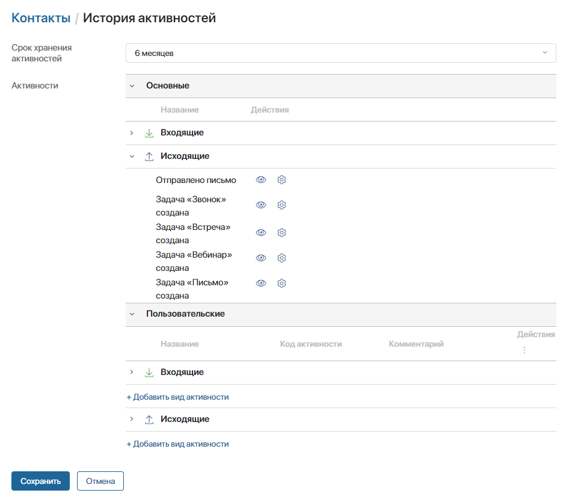
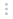
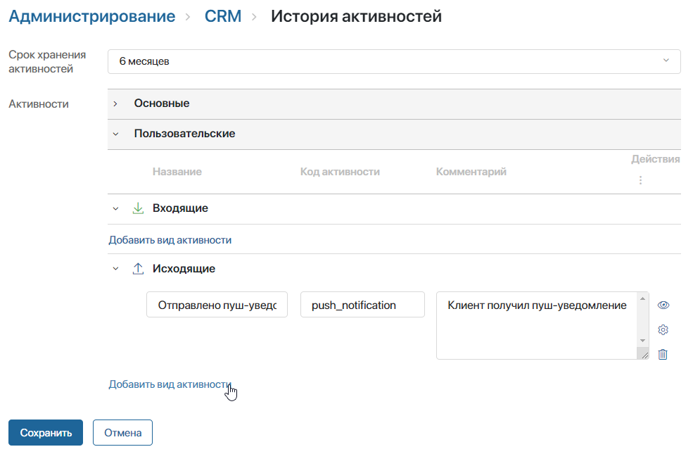
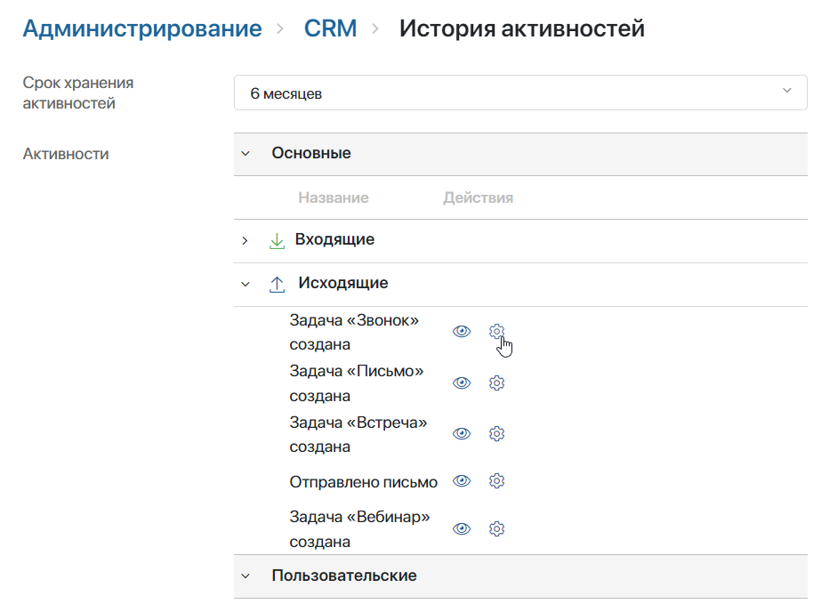
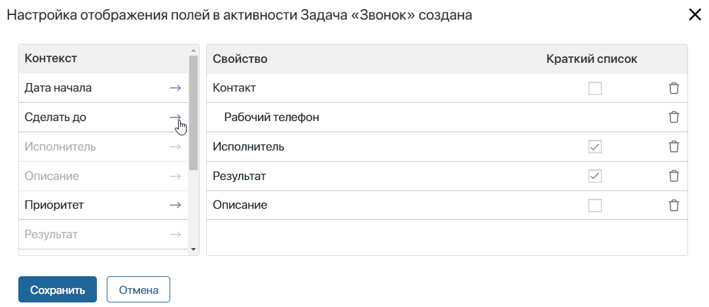

В системе хранятся записи о взаимодействии отдела продаж с контактом. Фиксируются созданные и выполненные задачи CRM, а также действия со стороны клиента, например реакции на отправленные письма с рассылками.
Записи обо всех касаниях с клиентом в хронологическом порядке можно просмотреть в карточке контакта в виджете История активностей. Подробнее читайте в статье «Отслеживание истории активностей». Виджет также можно добавить в карточку лида, сделки или компании.
Кроме того, зафиксированные данные используются для оценки заинтересованности клиента в покупке. На их основании определяется стадия прогрева контакта. Подробнее читайте в статье «Присвоение клиенту стадии прогрева».
Вы можете настроить список отображаемых действий, добавить собственные виды активностей и установить срок хранения данных. Для этого перейдите в настройки истории активностей. Это можно сделать двумя способами:
- откройте раздел Администрирование > История активностей;
- в разделе CRM откройте приложение Контакты. Рядом с названием приложения нажмите значок шестерёнки и выберите пункт История активностей.
На открывшейся странице отобразится список всех действий, по которым в системе сохраняются данные. В блоке Основные отображаются преднастроенные активности, созданные в системе по умолчанию, а в блоке Пользовательские добавляются собственные виды действий.

Здесь вы можете:
- установить срок, в течение которого информация об активностях хранится в системе и показывается в карточках элементов. Доступные опции различаются в зависимости от используемой поставки:
- для ELMA365 SaaS — устанавливается срок в шесть месяцев;
- для ELMA365 On-Premises — можно хранить данные полгода, год или бессрочно.
- добавить собственную активность в блоке Пользовательские, чтобы отслеживать дополнительные действия менеджеров и клиентов. Для фиксации данных по активности после создания её нужно указать в пользовательском бизнес‑процессе в блоке Создать запись активности. Подробнее читайте в разделе «Добавить пользовательскую активность»;
- скрыть активность, чтобы она не отображалась в виджете История активностей. Например, если определённое действие выполняется часто, и в карточках скапливается много неинформативных записей. Для этого напротив активности нажмите .
Информация по скрытой активности продолжит сохраняться и использоваться для расчёта стадий прогрева клиентов, но не будет отображаться в карточке контакта.
Если вы скрыли пользовательскую активность, её невозможно указать в бизнес-процессе при настройке блока Создать запись активности. Настроенные ранее процессы продолжат работать без ошибок;
- определить, какая информация об активности отобразится в виджете История активностей. Подробнее читайте в разделе «Настроить поля активности»;
- удалить пользовательскую активность, если она больше не актуальна для компании. Для этого нажмите напротив названия активности значок корзины.
Данные по удалённым активностям перестают сохраняться в системе и учитываться при расчёте стадий прогрева контактов. Записи не отображаются в виджете История активностей. Также после удаления активность скрывается из настроек.
Обратите внимание, если удалённая активность указана в бизнес‑процессе в блоке Создать запись активности, во время исполнения произойдёт ошибка. Ход процесса определяется настройками блока, указанными на вкладке Обработка ошибок;
- восстановить удалённую активность, если требуется возобновить сбор данных по ней. Для этого под колонкой Действия нажмите значок  и выберите опцию Показать удалённые. Затем напротив нужной активности нажмите значок и подтвердите действие. Бизнес‑процессы, в которых задействована восстановленная активность, снова будут выполняться без ошибок.
Добавить пользовательскую активность
Для учёта взаимодействий с клиентами, которых нет среди стандартных вариантов, вы можете добавить собственные активности. Например, если важно фиксировать, что клиенту отправлено пуш‑уведомление или получение заказа подтверждено.
При экспорте раздела CRM пользовательские активности выгружаются. Их можно импортировать в другую компанию с версией системы 2024.1 и выше.
Фиксация данных по пользовательской активности настраивается в три этапа: новый вид активности добавляется в настройках, действие описывается в бизнес‑процессе с помощью различных блоков, после этих блоков на схему процесса добавляется блок создания записи активности.
Рассмотрим подробнее, как настроить фиксацию данных.
Шаг 1. Создание вида активности
- В настройках истории активностей в блоке Пользовательские нажмите + Добавить вид активности. Если активность описывает действие клиента, создайте её в блоке Входящие, если действие со стороны компании — в блоке Исходящие.

- Укажите название и описание. Задайте уникальный код из латинских букв, цифр и знака подчёркивания, который будет использоваться для идентификации активности.
- Сохраните настройки.
Шаг 2. Описание действия в процессе
- Перейдите в бизнес-процесс, в рамках которого происходит взаимодействие с клиентом.
- Убедитесь, что в контексте процесса есть переменная типа Приложение, ссылающаяся на Контакты. В ходе процесса в неё должен записываться контакт, по которому добавляется запись активности. Например, с помощью блока Присваивание или в рамках задачи.
- Смоделируйте в процессе действие, по которому фиксируется запись. Для этого можно использовать любые графические элементы. Например, если вы хотите фиксировать отправку SMS сообщений о готовности заказа, используйте блок Отправить SMS.
Шаг 3. Фиксация активности в процессе
- После блока, который описывает содержание пользовательской активности, добавьте на схему блок Создать запись активности. В рамках этого блока происходит только сохранение записи о взаимодействии с клиентом. Когда процесс дойдёт до него, действие должно быть уже выполнено.
- В настройках блока укажите вид активности, созданный на шаге 1, и переменную, в которую в ходе процесса записывается контакт. Подробнее о настройках читайте в статье «Создать запись активности».
- Завершите моделирование бизнес-процесса. Нажмите на верхней панели Сохранить и Опубликовать.
В ходе процесса сначала выполнятся действия по активности, описанные другими графическими элементами, затем в блоке Создать запись активности информация зафиксируется в системе.
Запись по активности отобразится в карточке контакта и будет учтена при расчёте его стадии прогрева.
Настроить поля активности
Вы можете определить, какую информацию показывать в виджете История активностей по каждому виду действий.
Для пользовательских активностей в виджете можно отобразить только поля контакта. Для основных активностей, в зависимости от связанного с ними объекта, также доступны поля:
- задачи CRM;
- сделки или лида;
- электронного письма.
Чтобы настроить отображаемые поля:
- Напротив активности в списке нажмите значок шестерёнки.

- В открывшемся окне перенесите поля из колонки Контекст в список отображаемых свойств.

Чтобы убрать свойство из списка, нажмите напротив него значок корзины.
- Укажите, какая информация будет отображаться в виджете всегда. Для этого напротив поля установите флажок в колонке Краткий список. Остальные поля отобразятся, только если пользователь раскроет подробную информацию об активности.
- Нажмите в окне Сохранить.
- Сохраните настройки истории активностей.
Пользователь увидит указанные поля при просмотре истории активностей в виджете.